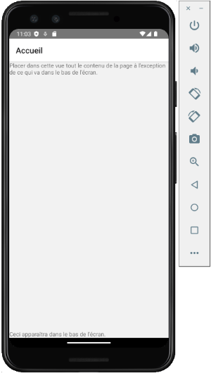

11. La navigation¶
11.1 Bibliothèque React Navigation¶
Lorsqu'une application React Native comporte plusieurs pages, il faut implanter un système de navigation à l'aide d'une bibliothèque externe.
React Navigation est l'une de ces bibliothèques, très utilisée sur le marché. Elle est d'ailleurs la bibliothèque recommandée pour React Native.
Remarquez que pour un projet React Web, il est plutôt conseillé d'utiliser React Router.
Installation¶
Pour travailler avec React Navigation, vous devez installer quelques paquets.
Terminal
cd /chemin/MonProjet
npm install @react-navigation/native
npm install react-native-screens
npm install @react-navigation/native-stack
Si vous développez pour iOS, ajoutez également ceci :
Terminal
npx pod-install ios
Définition du système de navigation¶
Typiquement, le système de navigation sera déclaré dans le fichier principal de l'application.
import React from 'react';
...
import {NavigationContainer} from '@react-navigation/native';
import {createNativeStackNavigator} from '@react-navigation/native-stack';
// Pour la vérification de type des routes (voir https://reactnavigation.org/docs/typescript#type-checking-the-navigator)
export type RootStackParamList = {
Home: undefined; // cette route n'a aucun paramètre
Edit: {id: number};
};
const Stack = createNativeStackNavigator<RootStackParamList>();
const App = () => {
// Définition du système de navigation.
return (
<NavigationContainer>
<Stack.Navigator initialRouteName="Home">
<Stack.Screen name="Home" component={HomeScreen} />
<Stack.Screen
name="Edit"
component={EditScreen}
initialParams={{id: 0}} // si la route ne reçoit pas le paramètre id, la valeur 0 sera utilisée
/>
</Stack.Navigator>
</NavigationContainer>
);
};
Par défaut, une barre de titre apparaîtra dans le haut de chaque page et affichera le nom de la route.
Il est possible de spécifier un titre pour chaque route afin que ce titre soit affiché dans la barre de navigation au lieu du nom.
Utilisation¶
Pour chaque composant associé à une route, on recevra un objet route et un objet navigation.
Les paramètres de la route, s'il y a lieu, pourront être retrouvés à l'aide de l'objet route. Dans l'extrait plus bas, j'ai simplement affiché la valeur du paramètre pour fins de démonstration.
Pour naviguer d'une route à l'autre, on utilisera navigation.navigate.
import React from 'react';
import type { NativeStackScreenProps } from '@react-navigation/native-stack';
...
// Pour la vérification de type des paramètres, même pour les routes sans paramètre (voir https://reactnavigation.org/docs/typescript#type-checking-screens)
type Props = NativeStackScreenProps<RootStackParamList, 'Edit'>;
// Ajustez les paramètres selon ce qui est requis. Ex : route pourrait ne pas être utile s'il n'y a pas de paramètre.
const EditScreen = ({route, navigation}: Props) => {
const {id} = route.params;
return (
<>
<Text>{JSON.stringify(id)}</Text>
<Button
onPress={() => navigation.navigate('Home')}
title="Accueil"
/>
</>
);
};
export default EditScreen;
Dès qu'on navigue vers une route, une flèche apparaît dans la barre de titre afin de permettre le retour à la page précédente.
Pour passer des paramètres à une route :
Voir « Passer des paramètres à une route ».
Pour plus d'information¶
« Navigating Between Screens ». React Native. https://reactnative.dev/docs/navigation
« Getting Started ». React Navigation. https://reactnavigation.org/docs/getting-started/
« Hello React Navigation ». React Navigation. https://reactnavigation.org/docs/hello-react-navigation/
« Type checking with TypeScript ». React Navigation. https://reactnavigation.org/docs/typescript
« Working with Stack Navigation in React Native with Typescript ». Medium. https://medium.com/timeless/working-with-stack-navigation-in-react-native-with-typescript-2deda91eab8a
« Getting Started with React Navigation v6 and TypeScript in React Native ». jscrambler. https://jscrambler.com/blog/getting-started-with-react-navigation-v6-and-typescript-in-react-native
11.2 Passer des paramètres à une route¶
Quand une route a besoin de savoir sur quel objet elle doit travailler, il est préférable de passer en paramètre à la route seulement l'identifiant de l'objet plutôt que l'objet en tant que tel.
Selon la documentation de React Navigation 1:
Avoid passing the full data which will be displayed on the screen itself (e.g. pass a user id instead of user object).
<Button
title="Modifier"
onPress={() => {
navigation.navigate('Edit', {
id: ...,
});
}}
/>
Source¶
- « Passing parameters to routes ». React Navigation. https://reactnavigation.org/docs/params
11.3 Retourner à la page précédente¶
Lorsqu'on travaille avec navigation.navigate(), on empile les pages.
L'animation pour passer à la nouvelle page est un léger mouvement à partir de la droite et on voit une flèche apparaître à gauche du nom de la nouvelle page afin de permettre de revenir à la page précédente.
Il est possible de retourner à la page précédente par programmation, et donc de retirer une page de la pile. L'animation sera alors un léger mouvement à partir de la gauche.
Pour revenir à la page précédente :
11.4 Paramètres d'un composant utilisé par deux routes différentes¶
Prenons le cas où un même composant permet d'afficher un formulaire d'ajout ou de modification.
Voici comment les paramètres seront définis pour les deux routes requises.
...
Si les routes Ajouter et Modifier sont associés au composant nommé Formulaire, ce composant ne recevra aucun paramètre quand c'est pour un ajout et un paramètre id quand c'est une modification.
Voici comment déclarer correctement ces paramètres.
// Code emprunté généré par Microsoft Copilot, novembre 2024
type AjouterProps = NativeStackScreenProps<RootStackParamList, 'Ajouter'>;
type ModifierProps = NativeStackScreenProps<RootStackParamList, 'Modifier'>;
type Props = AjouterProps | ModifierProps;
// Fin du code emprunté
const Formulaire = ({route, navigation}: Props) => {
const {id} = route.params ?? { id: null };
...
};
export default Formulaire;
11.5 Route avec paramètre optionnel¶
Une route peut avoir un paramètre optionnel.
Pour déclarer les types de cette route, on procédera comme suit :
11.6 Accéder à la navigation de partout¶
L'objet navigation est celui qui permet d'accéder à une route.
C'est react-navigation qui se charge d'instancier cet objet lors de la définition du système de navigation.
Je vous présente ici quelques technique pour accéder à cet objet à partir de différents contextes.
Paramètre passé par la route¶
Le cas le plus simple consiste à recevoir le paramètre directement de la route.
Il n'y a rien à modifier du côté du composant <NavigationContainer> utilisé dans App.tsx. Tout se passe dans les composants associés à chacune des routes.
Chaque composant recevra le paramètre comme suit :
import type { NativeStackScreenProps } from '@react-navigation/native-stack';
...
// Pour la vérification de type des paramètres (voir https://reactnavigation.org/docs/typescript#type-checking-screens)
type Props = NativeStackScreenProps<RootStackParamList, 'Home'>;
const HomeScreen = ({route, navigation}: Props) => {
...
return (
...
<Button
onPress={() => navigation.navigate('PageDeux')}
title="Page deux"
/>
...
);
};
Ou, si la route n'a aucun paramètre :
Méthode useNavigation()¶
Une autre façon d'accéder à l'objet navigation consiste à utiliser le hook useNavigation().
Ce hook permet de retrouver l'objet navigation du composant dans lequel il est appelé, sans qu'il ait été passé en paramètre.
Sous JavaScript, la variable de navigation peut être initialisée comme suit :
Si vous travaillez avec TypeScript, il vous faudra préciser le type de useNavigation(). Si vous ne le faites pas, vous aurez un avertissement. Le code fonctionnera tout de même mais vous devez apporter les correctifs nécessaires.
Voici un extrait de code qui initialise la variable de navigation avec useNavigation().
import {useNavigation, NavigationProp} from '@react-navigation/native';
import {RootStackParamList} from "./App"
...
const HomeScreen = () => {
const navigation = useNavigation<NavigationProp<RootStackParamList>>();
...
return (
...
<Button
onPress={() => navigation.navigate('PageDeux')}
title="Page deux"
/>
...
);
};
Cette technique permet également d'accéder à l'objet navigation dans un composant qui n'est pas associé à une route, tout comme la technique suivante.
Propriété passée à un composant¶
Prenons le cas où vous codez une barre de navigation dans un composant. Ce composant n'est évidemment pas associé à une route.
Pour avoir accès à l'objet navigation, le composant peut le recevoir en tant que propriété.
...
import {NavigationProp, ParamListBase} from '@react-navigation/native';
type BarreNavigationProps = {
navigation: NavigationProp<ParamListBase>;
};
const BarreNavigation = (props: BarreNavigationProps) => {
...
return (
...
<Button
onPress={() => props.navigation.navigate('PageDeux')}
title="Page deux"
/>
...
);
};
Pour plus d'information¶
« Access the navigation prop from any component ». React Navigation. https://reactnavigation.org/docs/connecting-navigation-prop/
« useNavigation ». React Navigation. https://reactnavigation.org/docs/use-navigation/
« Type checking with TypeScript ». React Navigation. https://reactnavigation.org/docs/typescript/
11.7 Placer un élément JSX dans le bas complètement de l'écran¶
Puisque les composants React Native utilisent le positionnement CSS flex par défaut, il est facile de placer un élément dans le bas complètement de l'écran, par exemple un bouton ou même une barre de navigation.
L'astuce consiste à donner le style flex: 1 à une vue (balise <View>) et à y placer tout le code qui doit être placé dans l'écran. La partie qui doit être au bas de l'écran sera placée en dehors de cette vue.
import {StyleSheet} from 'react-native';
const styles = StyleSheet.create({
conteneur: {
flex: 1,
},
...
});
export {styles};
...
return (
<>
<View style={styles.conteneur}>
<Text>Placer dans cette vue tout le contenu de la page à l'exception de ce qui va dans le bas de l'écran.</Text>
</View>
<Text>Ceci apparaîtra dans le bas de l'écran.</Text>
</>
);

Contenu qui défile¶
Dans le cas où la partie principale de l'écran doit pouvoir défiler, il faudra plutôt travailler avec flexGrow: 1.
En effet, la règle flex: 1 est un raccourci pour flex-grow: 1, flex-shrink: 1, flex-basis: 0. Donc, le contenu du ScrollView sera contracté (shrink) à la taille du parent alors il ne pourra plus défiler.
ScrollView¶
Voici un exemple avec un ScrollView.
import {StyleSheet} from 'react-native';
const styles = StyleSheet.create({
conteneur: {
flexGrow: 1,
},
ami: {
fontSize: 30,
padding: 30,
},
...
});
export {styles};
...
return (
<>
<ScrollView contentContainerStyle={styles.conteneur}>
{amis.map((ami, index) => (
<Text style={styles.ami} key={index}>{ami}</Text>
))}
</ScrollView>
<Text>Ceci apparaîtra dans le bas de l'écran.</Text>
</>
);
FlatList¶
Et voici un exemple avec un FlatList.